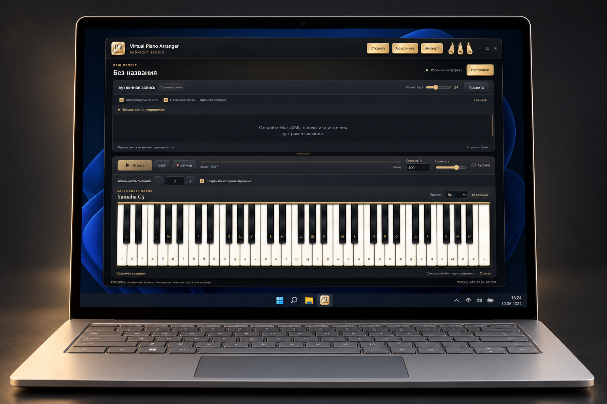

Virtual Piano Arranger — Руководство
Ноты — в буквы. Игра — на локальном пианино.
Начать
Открыть файл
Откройте MIDI, прослушайте отдельную партию или выбранные партии и выберите нужные для импорта. Также можно открыть MusicXML, проект VPA и буквенный TXT без длительностей.
Настроить запись
Откройте «Тональность и упрощение». Сначала выберите сдвиг и полноту в предпросмотре, затем «Применить»; «Отменить» сохраняет документ. 100% в режимах сопровождения оставляет весь выбранный вариант, не все ноты исходника. 0% оставляет одну верхнюю исходную ноту на нажатие. «Без упрощения» возвращает полный исходник. Связь исходного звучания компенсирует транспозицию букв.
Паузы и игра
«Показывать паузы» имеет связанные переключатели над записью и в окне тональности. Знак означает настоящую тишину выбранных партий; удерживаемая нота — не пауза. При проигрывании пауза подсвечивается, а при ручной игре отдельную клавишу для неё нажимать не нужно. Играйте следующие ноты, чтобы пропустить нажатие.
Сохранение и запись звука
Сохраните проект VPA для нот и настроек. Экспорт TXT сохраняет видимые буквы, не точный ритм. «Запись» записывает звук пианино программы, не микрофон. WAV экспортируется напрямую; другим форматам нужен отдельно доступный FFmpeg.
Ограничения
Это предварительный выпуск. MIDI звучит пианино, не исходными GM-инструментами. Сверяйте распознавание с оригиналом. В TXT нет автоматического проигрывания и придуманных пауз. Распознавание аудио/видео и импорт YouTube не доступны. Не прикладывайте личные проекты и журналы к публичным сообщениям об ошибках.